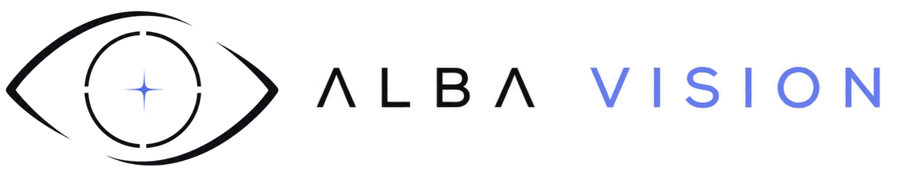

Óptica compacta
Sensores y óptica seleccionados para equilibrar resolución, campo de visión, masa y consumo energético.

Conversemos ↗Alba Ventures / 02
Sistemas de visión compactos para observar, interpretar y decidir desde satélites CubeSat.
La misión
Si el dato se comprende en órbita, la decisión puede llegar a Tierra más rápido.
Alba Space lleva la experiencia de Alba Vision en óptica, IA embebida y hardware inteligente a plataformas CubeSat. Diseñamos cargas útiles visuales compactas que aprovechan cada gramo, watt y byte disponible.
Capacidades orbitales
Una arquitectura modular para misiones de observación, navegación y validación tecnológica.
Sensores y óptica seleccionados para equilibrar resolución, campo de visión, masa y consumo energético.
Edge AI para clasificar, comprimir y priorizar imágenes antes de utilizar el enlace de comunicación.
Electrónica y software preparados para integrarse con buses compactos y restricciones reales de misión.
Arquitectura de misión
El procesamiento en el borde reduce datos innecesarios y aumenta el valor de cada ventana de comunicación.
La carga útil captura imágenes según el plan de misión y las condiciones orbitales.
El sistema corrige y normaliza la señal antes de ejecutar modelos de análisis.
Los algoritmos detectan eventos, zonas o patrones de interés directamente a bordo.
Se transmiten primero los resultados y datos con mayor valor para la misión.